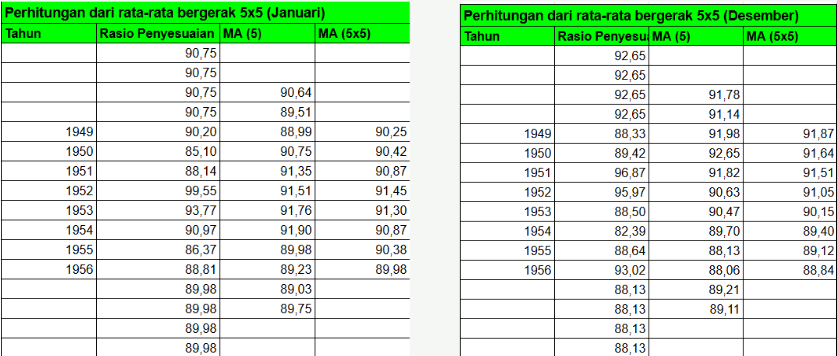

Deskripsi Singkat
Project ini merupakan analisis kelompok yang menerapkan Metode Dekomposisi Census II pada data deret waktu bulanan periode 1949–1956.
Metode Census II digunakan untuk memisahkan komponen deret waktu menjadi komponen musiman, trend-siklus, dan random sehingga pola dasar data dapat dianalisis dengan lebih jelas.
Analisis dilakukan melalui beberapa tahapan, mulai dari penyesuaian hari perdagangan, penyesuaian musiman awal, hingga penyesuaian musiman akhir.
Final Seasonal Adjustment
Dalam project kelompok ini, saya berkontribusi pada tahap Penyesuaian Musiman Akhir. Tahap ini bertujuan menyempurnakan faktor musiman berdasarkan hasil penyesuaian musiman awal.
Mengisolasi komponen trend-siklus menggunakan weighted moving average 15-data Spencer.
Menghitung rasio musiman-random akhir berdasarkan data asli dan hasil Spencer.
Mengidentifikasi dan mengganti nilai ekstrem sebelum pembentukan faktor musiman akhir.
Membentuk faktor musiman akhir menggunakan MA 5×5 karena terdapat unsur random yang signifikan.
Hasil Analisis

Pada tahap penyesuaian musiman akhir, faktor musiman akhir diperoleh melalui proses smoothing menggunakan MA 5×5. Pemilihan MA 5×5 dilakukan karena terdapat unsur random yang signifikan pada data.
Selanjutnya, deret data akhir yang telah disesuaikan menurut musim diperoleh dengan membagi data asli menggunakan faktor penyesuaian musiman akhir.
Hasil akhir dekomposisi menghasilkan komponen musiman, trend-siklus, dan random yang dapat digunakan untuk memahami pola data deret waktu.
Kesimpulan
Penerapan Metode Dekomposisi Census II menghasilkan proses penyesuaian musiman yang dilakukan secara bertahap, mulai dari penyesuaian awal hingga penyempurnaan faktor musiman akhir.
Pada kontribusi saya, proses penyesuaian musiman akhir menghasilkan faktor musiman yang telah diperhalus, deret data yang telah disesuaikan menurut musim, serta estimasi komponen trend-siklus dan random.